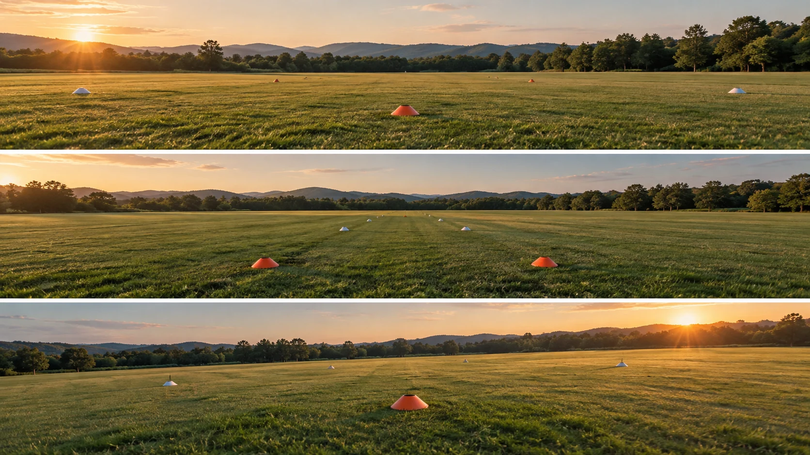

F29 · 초급 · FPV
시네우프 촬영 연습 5단계
정지·직선·완만한 회전을 구분하고 프레임이 달라지는 원인을 한 번에 하나씩 확인한다.
그림에서 확인할 세 가지조종 안정에서 촬영 목적이 있는 이동으로
1정지 상태의 기준
첫 화면의 넓은 빈 공간과 지평선을 본다. 이동을 시작하기 전 카메라가 어떤 높이와 방향을 기준으로 삼을지 생각하게 한다.
2직선의 변화
가운데 화면에서는 진행 방향과 주변 지형의 흐름을 비교한다. 여러 변수를 동시에 바꾸지 않아야 화면 변화의 원인을 읽기 쉽다.
3넓고 완만한 회전
마지막 화면의 여유 있는 공간을 본다. 회전의 급격함보다 같은 곡선을 다시 수행하며 안정된 화면을 얻는 것이 학습의 목적이다.
촬영 설계
촬영을 이렇게 설계한다
화면의 기준을 정한다
학습 연습에서는 지평선과 고정 대상을 기준으로 삼아 높이와 시선이 얼마나 바뀌는지 본다. 조종 성공 여부만 기록하지 말고 같은 화면을 다시 만들 수 있는지를 결과의 기준으로 정한다.
한 종류의 이동을 반복한다
직선 연습에서는 높이와 방향을 함께 바꾸지 않고 화면의 변화 원인을 줄인다. 같은 출발과 종료 지점에서 반복한 결과를 비교해 어떤 입력이 구도의 흔들림으로 나타났는지 검토한다.
회전의 크기를 일정하게 한다
완만한 회전에서는 속도와 시선이 갑자기 바뀌는 지점을 찾는다. 학습안은 장애물 통과나 위험한 근접 기동을 목표로 삼지 않고 넓은 공간에서 반복 가능한 촬영 움직임을 익히도록 구성한다.
기존 수집본은 Tom Strojnik의 단계별 연습 영상이지만 이번 재열람에서는 공식 설명을 다시 확보하지 못했다.
원본 영상시네우프 촬영 연습 5단계
1. 연습의 결과 기준
기동을 해냈다는 사실과 사용할 수 있는 화면을 얻었다는 사실을 나누어 본다. 같은 구도를 다시 만들 수 있는지가 촬영 연습의 기준이다.
2. 변수의 분리
높이·방향·속도가 동시에 바뀌는 구간을 찾는다. 결과가 달라졌을 때 무엇을 수정해야 할지 알 수 있도록 변화 원인을 나누어 본다.
3. 공식 단계의 재확인
원본이 열리면 실제 설명하는 단계와 이 교안의 기초 연습안을 구별한다. 기존 제목만으로 모든 단계의 세부 방법이 확인된 것은 아니다.
재생이 제한되면 원본 영상 새 창을 이용하세요.
원문 재확인 기록
원문을 다시 확보하지 못한 자료의 확인 범위
기존 기록
재검토 기록: 기존 조사에는 Tom Strojnik의 시네우프 단계별 연습 영상으로 수집되어 있다.
재확인 결과
이번에는 원본 URL 열기와 공식 검색에서 설명 본문을 다시 확보하지 못했다.
학습안 범위
따라서 원작의 단계 순서나 구체적인 조종 방법을 현재 확인된 사실로 옮기지 않았다.
정지·직선·완만한 회전은 촬영의 반복 가능성을 배우기 위한 독립된 기초 학습안이다.
Kling 프롬프트단문 인과 체인 · 16:9
내가 직접 만들어 본다
한 번에 하나의 변수만 바꾸어, 정지·직선·완만한 회전에서 화면이 달라지는 원인을 분리해 보여 준다.
- S01넓은 빈 들판에 막대 하나가 서 있다.
- S02영상은 하나의 연속 쇼트다.
- S03처음 10초 동안 드론은 한 자리에 멈춰 있다.
- S04멈춰 있기 때문에 지평선과 막대는 움직이지 않는다.
- S05다음 10초 동안 드론은 같은 높이로 앞으로 곧게 난다.
- S06높이와 방향이 그대로라서 지평선은 수평으로 남는다.
- S07앞으로 가기 때문에 막대만 점점 커진다.
- S08마지막 10초 동안 드론은 같은 속도로 천천히 왼쪽으로 돈다.
- S09속도가 같기 때문에 회전은 일정한 곡선이 된다.
- S10회전하는 동안 높이는 그대로 남는다.
- S11막대는 곡선 속에서도 화면 안에 남는다.
- S12한 번에 하나만 바뀌어서 변화의 원인이 분명하다.
[네거티브]
- 막대가 없고 지평선도 기울어져 있는 것 금지
- 중간에 컷이 들어가 쇼트가 끊기는 것 금지
- 드론이 처음부터 미끄러지듯 움직이는 것 금지
- 멈춘 동안 지평선과 막대가 흔들리는 것 금지
- 드론이 높이를 바꾸며 올라가거나 내려가는 것 금지
- 앞으로 가는 동안 지평선이 기울어지는 것 금지
- 막대가 커지지 않거나 옆으로 비껴가는 것 금지
- 회전하면서 속도가 빨라졌다 느려지는 것 금지
- 회전이 급해져 곡선이 꺾이는 것 금지
- 회전하면서 높이도 함께 바뀌는 것 금지
- 막대가 회전 중 화면 밖으로 나가는 것 금지
- 높이와 속도와 회전이 동시에 바뀌는 것 금지
결과에서 볼 것
- 멈춘 구간에서 지평선과 막대가 움직이지 않았는가
- 직선 구간에서 변한 것이 막대의 크기뿐이었는가
- 회전 구간에서 속도와 높이가 일정했는가